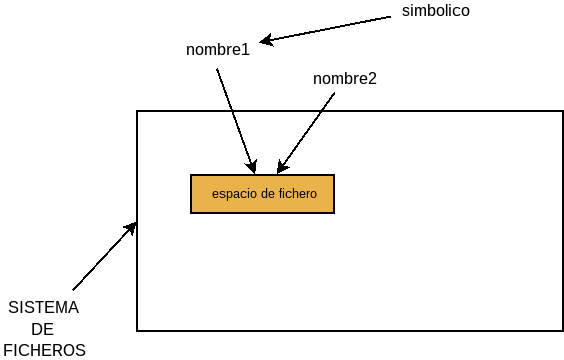

2.2.2. Archivos y directorios¶
2.2.2.1. Bicheando¶
2.2.2.1.1. … dentro de directorios¶
Nuestra intención ahora es echarle un vistazo a los comandos que nos permiten tanto comprobar cuál es el contenido de un archivo como comprobar cuál es el contenido de un directorio.
Por supuesto, para hacer referencia a archivos y directorios es indispensable conocer cómo referirse a ellos.
- pwd
Nos permite conocer en qué directorio estamos:
$ pwd /home/usuario
- ls
El comando fundamental para ver el contenido de un directorio es ls:
ls [opciones] [<nombre1> [<nombre2> ...]]Su sintaxis permite añadir opciones (muchísimas) y el directorio (también archivo que queremos consultar). Pueden incluirse varios y en ese caso se mostrarán todos ellos. Por ejemplo:
$ ls /sbin
Mostrará el contenido del directorio
/sbin. Al ser un directorio es posible también acabar el nombre con la barra:$ ls /sbin/
Nota
Dependiendo del contexto (o sea, del programa que estemos ejecutando) será o no indiferente rematar el nombre del directorio con la barra. En el caso de ls, sólo hay diferencia cuando el archivo es un enlace simbólico que apunta a un directorio: si se añade la barra, se mostrará el contenido del directorio apuntado; y si no se añade, el propio enlace simbólico.
También se puede usar ls con un archivo:
$ ls /bin/cp /bin/cp
En este caso, se muestra el nombre del archivo con lo que, usado así y si no se usan comodines o expandibles, no tiene más utilidad que saber si el archivo existe. Una opción que le da sentido a mirar un archivo con ls es
-l, que permite obtener cierta información del archivo o directorio que se consulte:$ ls -l /bin/cp -rwxr-xr-x 1 root root 124932 ene 14 2015 /bin/cp
Para cada archivo que consultemos, ls nos devuelve:
El tipo de archivo, representado por el primer carácter:
Carácter
Tipo de archivo
-
Archivo regular
d
Directorio
l
p
b
c
s
Socket
Los nueve siguientes caracteres representan los permisos, que se tratarán más adelante.
El siguiente campo, que es un número, representa el número de referencias al archivo en el sistema de archivos. Para entender esto, tomemos primero un archivo vacío (que podemos crear con touch):
$ touch vacio $ ls -l vacio -rw-rw-r-- 1 usuario usuario 0 oct 14 10:02 vacio
Este archivo recién creado ocupará un espacio físico en disco y sólo tiene una referencia en el sistema de archivos: a través del nombre vacío. Consecuentemente el número de enlaces es 1. Sin embargo, en los sistemas unix existen los llamados enlaces duros, que permiten asociar ese mismo espacio de disco a otro nombre (véanse ln o cp más adelante):
$ ln vacio mismo.vacio $ ls -l vacio mismo.vacio -rw-rw-r-- 2 profesor profesor 0 oct 14 10:02 mismo.vacio -rw-rw-r-- 2 profesor profesor 0 oct 14 10:02 vacio
Ahora hay dos nombres refiriéndose al mismo espacio, por lo que aparece un 2. De hecho, si comprobamos qué inodo refieren ambos nombres, veremos que el mismo:
$ ls -1i vacio mismo.vacio 669 mismo.vacio 669 vacio
En el caso de los directorios, el concepto es el mismo (referencias al propio directorio), aunque no está asociado al concepto de enlaces duros. En principio, al crear un directorio:
$ mkdir directorio
hay dos referencias a él: la referencia a él que se hace en el directorio raíz:
$ ls -d directorio directorio
y la referencia a él que hace él mismo (el punto .):
$ ls -a directorio . ..
Consecuentemente, al crearse un directorio habrá dos referencias a él:
$ ls -ld directorio drwxrwxr-x 2 usuario usuario 4096 oct 14 12:38 directorio
Y cada vez que creemos un subdirectorio, se generará otra referencia:
$ mkdir directorio/subdirectorio $ ls directorio/subdirectorio . ..
En este caso, los dos puntos (..) de
directorio/subdirectorio, al referirse a su directorio padre, se refieren adirectorio:$ ls -d directorio drwxrwxr-x 3 usuario usuario 4096 oct 14 12:38 directorio
En cambio, crear un nuevo archivo dentro del directorio no provoca ninguna referencia:
$ touch directorio/otro.vacio.mas $ ls -d directorio drwxrwxr-x 3 usuario usuario 4096 oct 14 12:38 directorio
En conclusión, el número representa:
Para archivos, representa el número de enlaces (duros) al propio archivo.
Para directorios, 2 más el número de subdirectorios que contiene.
Prudencia
En lo referente a directorios, el sistema de archivos BTRFS no considera dentro de las cuentas para el número las referencias de «.» o «..». Como para directorios no se pueden hacer enlaces duros, este campo siempre valdrá 1. Véase Hard link count reported by "ls -l" is wrong.
Los dos siguientes campos son el usuario propietario y el grupo propietario, cuya explicación diferiremos hasta explicar los permisos
El número que se muestra a continuación es el tamaño.
El siguiente dato es la fecha de modificación.
El último campo el nombre del archivo.
Otra opción útil es
-d. El comportamiento de ls es mostrar el propio archivo, si es un archivo; o el contenido del directorio, si es un directorio. Esta opción permite ver el propio directorio, y no su contenido y puede ser útil si lo que buscamos es conocer información sobre él (permisos o propietarios, por ejemplo):$ ls -ld / drwxr-xr-x 22 root root 4096 jul 21 2015 /
-lmuestra el tamaño en bytes, lo cual es engorroso cuando el tamaño es grande. Para paliar esto, existe la opción-h, que representa el tamaño en las unidades más adecuadas:$ ls -lh Documentos -rw-rw-r-- 1 usuario usuario 473K jun 24 09:11 BOJA1.pdf -rw-rw-r-- 1 usuario usuario 2,6M oct 6 12:50 CuadranteFotos.pdf -rw-rw-r-- 1 usuario usuario 30K oct 5 17:53 Distribucion.pdf
Por defecto, ls ordena los archivos alfabéticamente, pero en ocasiones puede resultarnos útil otro tipo de ordenación:
-rinvierte el orden.-tordena de más reciente a más antiguo. Es obvio, que si se quieren ver los más recientes al final del listado, puede usarse -tr.-Xordena alfabéticamente según la extensión.-Sordena por tamaño de mayor a menor.group-directories-firstmuestra antes los directorios que los archivos.
- stat(1)
Además de ls -l otro modo de obtener información sobre archivos es el comando stat:
$ stat . Fichero: «.» Tamaño: 4096 Bloques: 8 Bloque E/S: 4096 directorio Dispositivo: 801h/2049d Nodo-i: 524290 Enlaces: 36 Acceso: (0755/drwxr-xr-x) Uid: ( 1000/ usuario) Gid: ( 1000/ usuario) Acceso: 2016-10-14 13:32:41.571887432 +0200 Modificación: 2016-10-14 13:36:51.769082058 +0200 Cambio: 2016-10-14 13:36:51.769082058 +0200 Creación: -
Este comando es más prolijo que la opción
-lde ls y entre otras cosas ofrece cuatro fechas distintas:Fecha de modificación, que indica el último momento en que se modificó el contenido de un archivo.
Fecha de acceso, que indica el último momento en que se accedió (leyó) el archivo. Esta es la teoría, porque en la práctica hacer registro en el disco duro (o sea, escribir) cada vez que se accede a un archivo o directorio provoca que baje mucho el rendimiento del sistema, así que lo habitual es que Linux monte los sistemas de archivos con la opción noatime, para que la fecha de acceso sólo se actualice o una vez al día o cuando se modifica el archivo.
Fecha de cambio que indica el último momento en que la metainformación del archivo sufrió algún cambio (propietario, permiso, números de enlaces, etc.).
Fecha de creación que indica el momento en que se creó el archivo. Esta fecha no forma parte del estándar POSIX, por lo que las versiones antiguas de Linux y sus sistemas de archivos no se preocuparon en un principio de ella y la salida de la orden que mostramos es una muestra de ello.
Curiosidad
Los antiguos sistemas de archivos de Linux (ext2, ext3) no tenían soporte para ella, y sólo ext4 (estable en 2008) la introdujo. Sin embargo, el núcleo de Linux siguió sin soportarla. Sólo a partir de su versión 4.11 (abril de 2017) le dio pleno soporte. Hubo que esperar a 2018 para que las herramientas includas en coreutils supieran cómo obtenerla tal como expone Stéphane Chazelas en una respuesta de unix.stackexchange.com[1].
En Debian, al menos a partir de Bookworm, se ha comenzado a poder consultar la fecha de creación de los archivos.
Una opción interesante de stat es
-cque permite indicar el formato de salida del resultado de la consulta. Para expresar este formato cada propiedad se representa de la forma%<letra>. Por ejemplo,%Urepresenta el nombre del propietario y%u, uid del propietario. Así pues:$ stat -c "%U/%u" archivo usuario/1000
En la página del manual se desglosan las letras que corresponden a cada propiedad.
- tree
Muestra los contenidos de un directorio en forma arborescente:
tree [<opciones>] [<directorio>]El directorio que se indica como argumento es aquel del que se desean mostrar los contenidos. Si no se indica se sobrentiende el directorio actual. Dispone de muchas opciones. Algunas interesantes son:
-dSólo muestra directorios y no archivos.
-LNivel de profundidad. tree es recursivo, así que muestra los directorios y los directorios de los directorios y así sucesivamente hasta que ya no quedan directorios que mostrar. Con esta opción podemos indicar en qué nivel parar. Por ejemplo:
$ tree -dL 1 /
Sólo nos mostrará los subdirectorios del directorio raíz, sin profundizar más.
-aComo la opción de ls, muestra también los archivos ocultos.
Nota
Requiere la instalación del paquete homónimo.
- file
Por lo general, las extensiones se usan para saber de qué tipo es un archivo, pero no tienen por qué haber sido bien elegidas. file es un comando que intenta averiguar de qué tipo es, basándose en su contenido:
$ file primera_carlista.mp4 primera_carlista.mp4: ISO Media, MP4 Base Media v1 [IS0 14496-12:2003]
Si se usa la opción -i, devuelve el tipo MIME:
$ file -i primera_carlista.mp4 primera_carlista.mp4: video/mp4; charset=binary
- which
Dentro de los comandos que nos permiten gulismear en el árbol de directorios está which. Básicamente, busca dónde se encuentran los programas que podemos ejecutar a través de la línea de comandos[2]:
$ which ls /bin/ls
Una alternativa (que es muy útil al programar porque cumple con el estándar POSIX) es:
$ command -v ls /bin/ls
- whereis
ls puede usarse para comprobar si un archivo se encuentra o no en un directorio. Sin embargo, si no sabemos a ciencia cierta en qué directorio se encuentra, el comando puede resultar o tedioso o, directamente, bastante inútil. Ya se ha citado which, pero está limitado a ejecutables. Un comando más exhaustivo es whereis, que es capaz de encontrar ejecutables, códigos fuente y páginas del manual en los directorios en los que suelen encontrarse:
$ whereis ls ls: /bin/ls /usr/share/man/man1/ls.1.gz
- find
Sin embargo, whereis no es suficiente si lo que queremos es buscar un archivo cualquiera. Para ello puede usarse el comando find que permite hacer una búsqueda bastante exhaustiva y, por tanto, tiene una ingente cantidad de opciones.
Nota
Los argumentos de find no siguen el estándar POSIX.
En general, la sintaxis del comando es la siguiente:
find [-P|-H|-L] [<directorio>] [opciones]Las tras primeras opciones hacen referencia a cómo find tratará los enlaces simbólicos. la predeterminada es
-Pque implica no seguirlos.El directorio es aquel bajo el cual find buscará lo que se le exprese con las opciones que se pasen a continuación. La búsqueda es recursiva, de modo que find buscará dentro de los subdirectorios. El orden es importante y, de hecho, el directorio debe expresarse antes que las opciones. Si no se indica, se sobrentiende que es el directorio actual (o sea, .).
Las opciones son muy variadas: algunas permiten modificar el comportamiento del comando; otras seleccionar archivos casi según cualquier criterio imaginable; y otras realizar una operación (como imprimir por pantalla o borrar). El orden no es indistinto y deben colocarse según se han enunciado: primero las de modificación, luego las de selección y, por último, la de operación. Si no se especifica ninguna acción, se sobreentiende que se desea imprimir (
-print). En este documento sólo se describirán las opciones más relevantes:Opciones de modificación:
-maxdepth <N>:Realiza la búsqueda sólo profundizando hasta el nivel N. Por ejemplo, un nivel 1 buscará dentro del directorio que se haya usado como punto de partido, pero no dentro de los subdirectorios. Esta opción debe colocarse antes de
-mount:No busca en subdirectorios que pertenezcan a sistemas de archivos distintos al del directorio de punto de partida.
- Opciones de selección:
Estas opciones se evalúan a verdadero o falso. Si la evaluación sobre un archivo resulta verdadera, el archivo se seleccionará.
-name <expresion>:permite buscar archivos por su nombre según la expresión que se indique. Esta expresión sigue las mismas reglas que las indicadas aquí. La variante -iname obra del mismo modo, pero sin tener en cuenta mayúsculas o minúsculas.
-path <expresion>:busca archivos atendiendo a toda su ruta y no sólo al nombre. Existe también la variante ipath para no distinguir mayúsculas de minúsculas. En cuanto a la ruta, debe considerarse que esta se expresa como ruta relativa al directorio que se tome como punto de partida. Por ejemplo, si el directorio es . las rutas de todos los archivos encontrados empezarán por
./; si dir, todas empezarán pordir/.-regex <expresion_regular>:Como -path pero la expresión se evaluará como una expresión regular. iregex cumple la misma función pero sin distinguir mayúsculas de minúsculas. Relacionada con estas dos expresiones existe la opción -regexptype, que permite indicar qué tipo de expresiones regulares se usarán. Para saber qué tipos estan soportados puede hacerse lo siguiente:
$ find -regextype help
-type f|d|l|p|b|c|s:restringe la búsqueda al tipo de archivo indicado. El carácter es el mismo que el que muestra la opción
-lde ls, excepto en el caso de los archivos regulares que se usa la f en vez del guión.`-samefile <archivo>:busca los otros enlaces duros del archivo indicado.
-empty:el archivo (o directorio) está vacío.
-mtime <n>:el archivo se modificó hace n días. Si se hace negativo el número, significa hace menos de n días; y, si incluye un signo + explícito, hace más de n días. Las opciones
-atimey-ctimesirven para lo mismo pero usando las fechas de acceso y cambio.-newer <archivo>:busca los archivos modificados después del archivo de referencia proporcionado como argumento.
anewerycnewersirven para lo mismo, pero usando las fechas de acceso y cambio.-group <grupo>:busca archivos cuyo grupo propietario sea el indicado (puede usarse el nombre o el gid).
-user <usuario>:busca archivos propiedad del usuario indicado (puede usarse el usuario o el uid).
-links <n>:busca archivos que tengan n enlaces. Pueden usarse los signos - y + con el mismo significado que para mtime.
-size <n><unidad>:busca archivos de un tamaño determinado. En cuanto a la cantidad pueden usarse los signos - y + para indicar menor y mayor como en otros casos. En cuanto a la unidad se pueden indicar:
b, bloques de 512 bytes.
c, bytes.
k, kilobytes.
M, megabytes.
G, gigabytes.
- Opciones de operación:
Pueden indicarse varias operaciones que se ejecutarán una detrás de otra.
-print:imprime en pantalla los archivos seleccionados, uno por línea. Hay variantes de esta opción, pero hay una indispensable en ciertos casos que es print0 que imprime de modo que el carácter que separa un archivo de otro es el carácter nulo.
-delete:borra el archivo indicado. Si el archivo es un directorio, debe estar vacío.
-exec <comando> '{}' +:ejecuta el comando indicado sobre los archivos seleccionados. El “{}” representa tales archivos que se usaran como argumentos para comando. Al incluir el signo
+, no se ejecuta un comando por cada archivo, sino que se procura ejecutar el comando incluyendo el mayor número de archivos posibles en cada invocación. Por ejemplo:$ print . -type f -exec file -i '{}' + ./hola2: inode/x-empty; charset=binary ./a 1: inode/x-empty; charset=binary ./tmux.txt: text/x-fortran; charset=utf-8 ./hola: inode/x-empty; charset=binary
-ok <command> '{}' \;:ejecuta el comando para cada uno de los archivos seleccionados, pero pregunta antes si se quiere efectuar cada operación o no. Existe también una versión de
-execque remata en punto y coma, pero por ser menos eficiente que la referida, se ha callado.-prune:no hace nada en especial más que impedir que find descienda si el archivo seleccionado es un directorio. Puede usarse para evitar revisar los contenidos de un archivo.
-quit:sale inmediatamente de find
Faltan opciones, pero con las indicadas hay materia para entretenerse. Aún queda por explicar los operadores, pero antes es útil ilustrar con algunos ejemplos el uso:
Buscar todos los archivos
.pdfbajo el directorio de trabajo:$ find -iname '*.pdf'
Como no se especifica acción alguna, se sobreentiende
-print.Lo mismo, pero especificando que se buscan archivos regulares y no cualquier otra cosa (enlaces simbólicos, por ejemplo):
$ find -type f -iname '*.pdf'
Buscar un archivo llamado
deseable.txtbajo el directorio de trabajo y para la búsqueda nada más encontrarlo:$ find -type f -name 'deseable.txt' -print -quit
En este caso, para cada archivo encontrado, primero se imprime y luego se acaba la ejecución. Por tanto, nada más encontrar e imprimir el primer archivo, se dejará de buscar. Puede ser útil si sabemos de antemano que el archivo es único.
Muestra el tipo de los archivos del directorio actual:
$ find -maxdepth 1 -type f -exec file '{}' +
Borra los archivos vacíos que se encuentran bajo el directorio actual:
$ find -type f -empty -delete
Como en el caso anterior, pero preguntando primero:
$ find -type f -empty -ok rm -f '{}' \;
Busca bajo el directorio
/home/store/videolos archivos mayores a 500MB:$ find /home/store/video -type f -size +500M
Busca bajo el directorio actual los archivos con más de un enlace:
$ find -type f -links +1
Estas pueden ser búsquedas útiles con find, pero… no se vayan todavía, que aún hay más. Si se analizan algunos ejemplos, se observará que se han dado dos o más condiciones o incluso dos o más acciones y estas siempre eran acumulativas:
$ find -type f -empty -delete
En este ejemplo se buscan archivos que sean regulares (-type f) y que, además, estén vacios. Es decir, que si hablamos en términos lógicos hay un opèrador and implícito entre una y otra condición. También lo hay entre las condiciones y la acción
-delete(y me lo imprimes), porque las acciones, además de hacer algo, devuelven un valor siempre verdadero.Pues bien, en find podemos usar los operadores
-a(and),-o(or) o!(not) y los paréntesis para agrupar. Esto convierte a find en infinitamente más poderoso. Por ejemplo:Busca todos los archivos que no estén vacíos:
$ find -empty -o -print
La razón de que este funcione es que find evalúa como habitualmente se hace en programación cuando hay un or: sólo se evalua la segunda expresión si la primera era falsa. Por tanto, si el archivo está vacío no se hace nada, pues no hay ninguna acción indicada y ahi se para de evaluar para el archivo en cuestión; pero si no está vacío, se evalúa la segunda expresión y, consecuentemente, se imprime el nombre del archivo.
Por supuesto esto mismo se podría haber logrado así:
$ find \! -empty -print
que es más inmediato. pero hacerlo de otro modo ilustra mejor cómo evalúa find. En este último caso, además, podemos ahorrarnos -print.
Busca archivos
.pdfbajo el directorio actual, pero desecha los subdirectorios que se llaman backup:$ find -type d -name backup -prune -o -name '*.pdf' -print
El razonamiento es análogo al del anterior ejemplo, pero en este caso ha sido necesario añadir
-prune. La razón es que el hecho de que no se imprima un directorio, no implica que no se entre en él y se revisen sus contenidos, por lo que es necesaria la acción -prune para descartarlo por completo. Antes se omitió este -prune porque al concordar la expresión con directorios vacíos, esto implica que no tengan nada dentro.Busca archivos regulares y enlaces simbólicos:
$ find \( -type f -o -type l \) -print
Es necesario agrupar para que ambas condiciones se apliquen a la misma acción -print. No incluir los paréntesis implicaría no hacer nada para los archivos regulares y, en caso contrario, comprobar que es un enlace simbólico e imprimir, o sea, imprimir sólo enlaces simbólicos.
Nota
find puede ser muy útil a la hora de seleccionar archivos de los que se desea realizar copia de seguridad al ser mucho más versátil que las opciones que tar da para ello.
- du
Sirve para estimar el espacio de disco que ocupan los directorios (o archivos) que se le pasan como argumento. Entiéndase que el espacio de ocupación que proporciona para los directorios es el espacio que ocupan todos sus contenidos. Por defecto, desglosa el espacio de cada uno de los subdirectorios que se encuentra, así que por lo general es usarlo con la opción -s que devuelve solamente el espacio ocupado por el archivo que se le ha dado como argumento. Además dispone de una opción -h que se comporta como la de ls. Por tanto:
$ du -hs ~ 3,4G /home/josem
Nos devolverá el espacio total ocupado por nuestro directorio personal. Es útil añadir la opción -x que no tiene en cuenta los subdirectorios que monten otros sistemas de archivos.
2.2.2.1.2. … y dentro de archivos¶
- cat
El comando más simple que permite consultar el contenido de un archivo es cat: simplemente escupe por pantalla, carácter a carácter, el contenido. Si el archivo es texto plano podremos leerlo, si es un archivo binario veremos caracteres ininteligibles y, si nuestra intención era echar un vistazo, habrá servidor de poco:
$ cat saludo.txt Hola
Suponiendo que hubiéramos escrito previamente un archivo que contuviera únicamente la palabra Hola. Si se escriben dos o más archivos como argumento, cat los concatena:
$ cat saludo.txt despedida.txt Hola Adiós
Es posible también usarlo sin indicar archivo alguno: en este caso recibirá los datos a través de la entrada estándar (véase redirecciones).
De entre sus opciones, es útil a veces -n, que numera las líneas al mostrarlas.
- more
Sin embargo, cat tiene el inconveniente de mostrar el archivo de una sola tacada, por lo que si el archivo es largo se escapará por la parte superior de la pantalla. Para remediarlo, puede usarse more que es un paginador que al llenarse la pantalla hará una pausa:
$ more archivo_larguisimo
y quedará esperando a que pulsemos Enter (avancar una línea) o Espacio (avanzar una pantalla). Por contra, con b retrocede una pantalla, aunque esto última sólo si se trata de un archivo y no un flujo procedente de una tubería. También puede escribirse una barra (/) seguida de una expresión regular para buscar la primera ocurrencia que concuerde con dicha expresión,
Se saldrá del programa al acabarse el archivo o al pulsarse q.
- less
Otro paginador que mejora las prestaciones de more y permite retroceder incluso cuando pagina flujos de texto. Consúltese la página del manual.
Tanto cat, como more, como less suelen tener ejecutables equivalentes para mostrar archivos que hayan sido comprimidos sin necesidad de descomprimirlos previamente:
zcat, zmore y zless para comprimidos con gzip (extensión .gz).
bzcat, bzmore y bzless para comprimidos con bzip2 (extensión .bz o .bzip2).
xzcat, xzmore y xzless para comprimidos con xz (extensión .xz).
zstdcat y zstdless para compimidos con zstd (extensión .zst).
- head
Cuando no se quiere inspeccionar todo el archivo sino sólo su comienzo, es útil el comando head, que permite indicar cuáles de las primeras líneas de un texto se desean mostrar:
$ head /etc/passwd
Si no se especifica nada, se muestran 10 líneas. Si se quiere mostrar un número distinto es posible hacerlo con la opción -n:
$ head -n20 /etc/passwd
El ejemplo, mostrará 20 líneas. Es posible también mostrar todas las líneas menos las n últimas, haciendo negativo el argumento de -n:
$ head -n-1 /etc/passwd
Esto mostraría todas las líneas menos la última.
Como con los comandos anteriores, si no se indica nombre alguno de archivo, se intenta tomar datos de la entrada estándar.
- tail
Como contrapartida a este último comand, tail permite mostrar las últimas líneas del archivo. Si no se especifica cuántas:
$ tail /etc/passwd
mostrará las diez últimas, pero puede variarse este número usando la opción
-n:$ tail -n15 /etc/passwd
Si se incluye antes del número el signo +, se motrará a partir de dicha línea:
$ tail -n+15 /etc/passwd
De nuevo, no indicar archivo implica que se quiere leer de la entrda estándar.
tail, además, admite la opción -f, que es muy útil cuando se quiere monitorizar porque muestra las últimas 10 líneas del archivo (o cualquier otro número si se usa además -n) y queda esperando a que el archivo se actualice con nuevas líneas:
# tail -f /var/log/syslog
- watch
No es un comando propiamente para ver el contenido de un archivo, sino para refrescar cada cierto tiempo (por defecto, cada dos segundos) la salida por pantalla de una orden. Así si hacemos:
$ watch -n1 "cat /proc/net/dev"
se nos mostrará el contenido del archivo
/proc/net/dev(ya que eso es lo que hace cat) e irá refrescando ese contenido cada segundo. En tal archivo es en donde el núcleo apunta el tráfico de red que pasa por cada interfaz, por lo que el efecto será tener una visión en tiempo casi real de las estadísticas de tráfico de red. Por la misma razón:$ watch "ls -l /var/log"
mostrará el contenido del directorio
/var/loge irá refrescado cada dos segundos la salida.
2.2.2.2. Creando contenidos¶
- mkdir
La acción más sencilla para alterar nuestro sistema de archivos es crear un nuevo directorio:
$ mkdir nuevo
Se pueden indicar varios directorios en una misma línea:
$ mkdir nuevo nuevo/dentro otro.nuevo
Obsérvese que para crear
nuevo/dentroes necesario que exista previamente file:nuevo, de ahí el orden. Sin embargo, mkdir tiene la opción-pque crear un directorio, creando previamente todos los directorios necesarios:$ mkdir -p nuevo/dentro
- rmdir
En contraposición, rmdir elimina directorios, pero sólo si están vacíos:
$ rmdir nuevo/dentro
SI se usa la opción
-pborra directorios padre, si estos se quedan vacíos:$ rmdir -p nuevo/dentro
- touch
En general, para crear un archivo de un determinado tipo lo que debe hacerse es usar una aplicación adecuada. Ahora bien, cuando se quiere crear un archivo vacío, muy comúnmente se usa touch:
$ touch estoy.vacio $ ls -l estoy.vacio -rw-r--r-- 1 usuario usuario 0 oct 15 20:08 estoy.vacio
En realidad, esta no es la función principal de touch, sino un efecto secundario, consecuencia de que el archivo no existe. Su tarea principal es cambiar las fechas de un archivo: o la de modificación (
-m) o la de acceso (-a) o ambas a la vez (no incluir ninguna de las anteriores opciones).Las fechas se fijan al momento en que se ejecuta el comando, a menos que se indique una fecha distinta a través de
-t. En todo caso, La de cambio siempre será la del momento de la acción:$ touch -t 200109110915 estoy.vacio $ stat estoy.vacio Fichero: «estoy.vacio» Tamaño: 0 Bloques: 0 Bloque E/S: 1024 fichero regular vacío Dispositivo: fd02h/64770d Nodo-i: 28 Enlaces: 1 Acceso: (0644/-rw-r--r--) Uid: ( 1000/ usuario) Gid: ( 1000/ usuario) Acceso: 2001-09-11 09:15:00.000000000 +0200 Modificación: 2001-09-11 09:15:00.000000000 +0200 Cambio: 2016-10-15 20:31:07.000000000 +0200 Creación: -
- rm
Si, en vez de crear un archivo, queremos borrarlo, podemos usar el comando rm. Su forma más elemental de uso es indicar como argumento el nombre del archivo a borrar:
$ rm archivo_a_borrar
aunque pueden incluirse varios nombres en una misma orden.
Como por error podemos borrar un archivo sin querer, rm proporciona la opción
-i, que pide confirmación antes de hacerlo. En oposición está-f, que no lo hace. Cuando se usan ambas prevalece la última que se indicó.Además, el comando sirve en principio para borrar archivos, por lo que si se intenta borrar un directorio, fallará. Para evitar esto, puede usarse el comando
-rque borrará directorios con todo su contenido:$ rm -r directorio
Es habitual usar
-rjunto a-fpara evitar preguntas continuas de confirmación, ya que la orden recursiva puede implicar muchísimos borrados.Truco
Es sumamente aconsejable colocar -rf al final de la orden después de haber incluido las rutas de borrado, y no antes. Eso evita que accidentalmente pulsemos Enter antes de acabar de terminar de escribir la ruta y borremos accidentalmente más de la cuenta.
- mv
Otra operación habitual con archivos (o directorios) es moverlos de lugar, para lo cual existe el comando mv. La sintaxis general es la siguiente:
$ mv [opciones] <origen> <destino>
Es decir, el archivo se mueve desde un origen a un destino. El origen es el propio archivo, mientras que el destino puede existir o no. Para entender cómo se comporta mv es mejor usar el siguiente ejemplo:
$ touch fic1 fic2 $ mkdir dir1 dir2
Es decir, creamos dos archivos y dos directorios. En este caso:
$ mv fic1 dir1 $ ls dir1 fic1
el destino existe y es un directorio, por lo que el efecto que movemos
fic1dentro del directorio de destinodir1. En cambio, si el destino no existe:$ mv dir1/fic1 dir2/fic.renombrado $ ls dir2 fic.renombrado
Lo que hacemos es cambiar el nombre. Por último, si el destino existe, pero es un archivo, sobrescribimos:
$ mv dir2/fic.renombrado fic2 ls dir1 dir2 fic2
Si tomáramos como origen un directorio en vez de un archivo las consecuencias son las mismas, excepto que no tiene sentido el caso en que el destino es un archivo, porque un directorio no puede sobrescribir un archivo, así que la orden fallará.
También es posible indicar más de dos argumentos. En ese caso el último argumento se considerará el destino y todos los anteriores archivos de origen. Para que la orden funcione el destino debe ser un directorio y existir; así lo que haremos será mover todos los orígenes dentro de tal directorio de destino.
Resumidamente, podemos verlo así:
Origen
Destino
Acción
F
F
El archivo se mueve al destino. Si este existe, sobreescribe; si no, cambia de nombre.
F
D
El archivo se mueve dentro del directorio.
D
F
Error.
D
D
El origen se mueve dentro del directorio de destino. Si no existe, cambia el nombre, a menos que al destino le incluyamos la barra final, en cuyo caso se producirá un error.
Al igual que rm, mv tiene también las opciones
-iy-f.Nota
En los sistemas BSD, cuando el origen es un directorio y acaba en barra, el comportamiento de mv (y de cp), cambia. Cuando el directorio de destino existe, no se mueve el propio directorio origen dentro del de destino, sino su contenido.
- cp
Si lo que se pretende es hacer una copia, de manera que al acabar tengamos el original y una copia, existe el comando cp. Su funcionamiento es similar al de mv excepto por hecho de que no perdemos el archivo original. Por tanto, es válido todo lo ya indicado, pero, además, dispone de algunas otras opciones útiles.
Cuando movemos un archivo, no cambia sus propiedades (fechas, permisos, propietarios, etc.), excepto la fecha de cambio. Por contra, cuando se copia un archivo, muchas propiedades si pueden cambiar: por ejemplo, las fechas de acceso y modificación pasan a reflejar el momento de la copia o el propietario em la copia es aquel que la realiza. La opción
-p(de preservar) intenta que las propiedades cambien lo menos posible. De este modo, se conservaran las fechas (excepto la de cambio) y, si la copia la hace el administrador, se preservará incluso el propietario:$ touch -t 201109301130 f1 $ ls -l f1 -rw-r--r-- 1 usuario usuario 0 sep 30 2011 f1 $ cp f1 fc.normal $ cp -p f1 fc.preservado $ ls -l f* -rw-r--r-- 1 usuario usuario 0 sep 30 2011 f1 -rw-r--r-- 1 usuario usuario 0 oct 16 10:00 fc.normal -rw-r--r-- 1 usuario usuario 0 sep 30 2011 fc.preservado
En principio,
cpcopia archivos, pero es posible copiar también directorios añadiendo la opción-r.En particular, cuando se quiere hacer una copia exacta de un directorio con todo lo que contiene, preservando sus propiedades, es conveniente usar la opción
-a, que incluye-p[3] y-r.Hay una última opción muy interesante:
-l, que en vez de crear una copia crea un enlace duro. De este modo, no hacemos una copia de la información, sino que creamos un nueva referencia (un nuevo nombre) para la misma información:$ cp -l f1 f1.alternativo $ ls -l f1* -rw-r--r-- 2 usuario usuario 0 sep 30 2011 f1 -rw-r--r-- 2 usuario usuario 0 sep 30 2011 f1.alternativo
Para entender el concepto de enlace duro obsérve el siguiente gráfico:
Supongamos que el recuadro grande representa todo el espacio físico de un sistema de archivos. Dentro de este sistema de archivos, se encuentra un archivo que está referenciado a través de dos nombres (nombre1 y nombre2). Al crear un enlace duro lo que estamos haciendo es crear una nueva referencia a partir de una que ya existía. En el sistema de archivos, no hay dos archivos, sino un único archivo con dos nombres. La limitación es que ambas referencias sólo pueden existir dentro del mismo sistema de archivos. Por ese motivo, si intentamos crear un enlace duro en otro sistema de archivos, obtendremos un error. Supongamos que
/homey/tmpestán en distinto sistema de archivos:$ cd $ touch f1 $ cd /tmp $ cp -l ~/f1 . cp: crea el enlace duro './f1' a '/home/josem/f1': Enlace cruzado entre dispositivos no permitido
No pueden hacerse enlaces duros de directorios. Obsérvese, además, que ningún nombre es más importante que otro: el archivo se borrará definitivamente, mientras exista alguna referencia a él. Dicho de otro modo, no hay ningún nombre (referencia) original al que estén subordinados el resto de nombres.
- install
Copia archivos (no directorios) permitiendo definir cuáles son los permisos que tendrá la copia:
$ install -m755 /usr/share/doc/mutt/examples/mutt_oauth2.py ~/bin/
Nota
Obviamente, el uso de esta orden requiere conocer los permisos en Linux.
Como en el caso de cp, si el destino es un directorio, este debe existir y podrán definirse varios orígenes que se copiaran dentro de él.
- ln
Una alternativa para crear enlaces es ln:
$ touch nombre1 $ ln nombre1 nombre2 $ ls -l nombre* -rw-r--r-- 2 usuario usuario 0 oct 16 13:13 nombre1 -rw-r--r-- 2 usuario usuario 0 oct 16 13:13 nombre2
Ahora bien, existe otro tipo de enlace, el enlace simbólico. En este caso, el nombre no referencia directamente al archivo en sí (esto es, al espacio ocupado de disco), sino a un nombre de archivo. En el dibujo se expresa esta idea haciendo que simbólico señale a nombre1. Para crearlos puede usarse la opción
-s:$ ln -s nombre1 simbolico $ ls -l simbolico lrwxrwxrwx 1 usuario usuario 7 oct 16 13:21 simbolico -> nombre1
Hay varias diferencias con el otro tipo de enlace:
Existen dos archivos distintos: el archivo original y el enlace simbólico.
Los enlaces simbólicos se pueden hacer entre distintos sistemas de archivos.
Pueden enlazarse directorios.
Si se borra el archivo original (o simplemente, se cambia su nombre), el enlace simbólico referenciará un nombre de archivo que ya no existe, por lo que quedará huérfano:
$ rm nombre1 $ ls -l lrwxrwxrwx 1 usuario usuario 7 oct 16 13:21 simbolico -> nombre1 $ cat simbolico cat: simbolico: No existe el archivo o el directorio
Sin embargo, si volvemos a crear una archivo distinto con el nombre que tenía el anterior, entonces la referencia volverá a cobrar sentido y podremos alcanzar el nuevo archivo usando el enlace simbólico:
$ echo "Soy otro archivo distinto" > nombre1 $ cat simbolico Soy otro archivo distinto
Advertencia
Ha de tenerse cuidado al crear enlaces simbólicos cuando se usa una ruta relativa para expresar el archivo apuntado. Esta ruta relativa no se expresa respecto al directorio de trabajo, sino respecto al propio enlace simbólico. Retomando el ejemplo anterior:
$ cd $ touch nombre1 $ cd /tmp $ ln -s nombre1 ~/simbolico
Como se quiere usar una ruta relativa,
nombre1debe expresarse respecto al directorio donde se desea crearsimbólico. Por tanto, la ruta relativa consiste en escribir simplemente el nombre, aunque nuestro directorio de trabajo sea/tmpy no el directorio personal.Nota
Aunque sólo se pueden crear enlaces duros de archivos, es lícito usar la opción
-lde cp al copiar directorios con todo su contenido. En ese caso, cp creara un nuevo directorio al copiar el directorio y enlaces duros al copiar los archivos.
- realpath
Devuelve la ruta absoluta (resolviendo enlaces simbólicos si los hubiera) del archivo dado como argumento:
$ pwd /home/usuario $ realpath no.existe /home/usuario/no.existe
Puede requerirse que el archivo exista incluyendo la opción -e:
$ realpath -e no.existe realpath: «no.existe»: No existe el archivo o el directorio
- readlink
Resuelve el enlace simbólico devolviendo el archivo al que apunta:
$ touch soy.un.archivo $ ln -s soy.un.archivo soy.un.enlace.simbolico $ readlink soy.un.enlace.simbolico soy.un.archivo
Si se usa como argumento un archivo que no es un enlace simbólico, no imprimirá nada y devolverá un error a la shell.
Si el enlace simbólico apunta a otro enlace simbólico se devolverá este segundo enlace, con lo que no se sabrá a ciencia cierta cuál es el archivo al que se está apuntando en realidad. Para ello existe la opción -f que, además, siempre muestra la ruta absoluta:
$ ln -s soy.un.enlace.simbolico soy.otro.enlace $ readlink soy.otro.enlace soy.un.enlace.simbolico $ readlink -f soy.otro.enlace /home/usuario/soy.un.archivo
En este caso, tiene sentido usar como argumento cualquier archivo: no se generará un error, sino que se mostrará su ruta absoluta:
$ readlink -f soy.un.archivo /home/usuario/soy.un.archivo
Nota
Por tanto, la opción -f hace que sea equivalente a realpath.
Cuando se usa una interfaz de texto, gran parte de los archivos que se manejan son de texto, así que una de las herramientas más socorridas son los editores de texto. En cualquier sistema unix suele venir de serie vi o su primo de Zumosol vim, pero los neófitos suelen preferir nano, un clónico mejorado del antiguo editor pico. También es muy usado emacs.
2.2.2.3. Ejercicios sobre manipulación de archivos¶
Nota
Especifique convenientemente si usa el administrador o no.
Lleve a cabo las siguienes tareas:
Crear un fichero vacío llamado
estoy.en.blancodentro del directorio personal del usuario.Hacer una copia de este fichero en el directorio temporal con nombre
sigo.en.blanco. Use rutas relativas tanto para el origen como para el destino.Del archivo original hacer un enlace duro en el directorio temporal conservando el nombre. ¿Es posible en el sistema en que está trabajando? ¿Por qué?
Crear la siguiente estructura de directorios:
/tmp +---- DIR1 | +------ DIR11 | +------ DIR12 +---- DIR2 +---- DIR3 +------ DIR31 +------ DIR32 +------ DIR33Cambiar al directorio temporal usando ruta absoluta.
Mover
sigo.en.blancoal directorioDIR33.Manteniendo el mismo nombre, hacer un enlace simbólico a
sigo.en.blancoen el directorio personalMover el directorio
DIR33dentro deDIR12.Copiar todo el árbol que cuelga de
DIR1dentro deDIR32.Borrar todo lo que se ha hecho.
Haga esta otra tanda de ejercicios, sabiendo que comienza a hacerlos estando en su directorio personal:
Consulte el contenido de
/usr/sbinusando ruta relativa.Encuentre los ficheros de extensión
.txt.gzcontenidos dentro de la parte del árbol de directorios que cualga de/usr/share/doc.Entre en el directorio temporal usando ruta relativa.
Consulte cuáles son los permisos del directorio raíz. Utilice ruta relativa y dos órdenes distintas.
Cree la siguiente estructura de archivos (vacíos) y directorios:
+ /tmp +--- dirA | +-- fichero1.txt | +-- dirAA | | +-- fichero2.txt | | +-- fichero3.txt | | | +-- dirAB | +-- dirAC | +-- fichero4.txt +--- dirBMueva
dirAAdentro dedirB.Buscar todos los ficheros de texto plano (extensión
.txt) contenidos en el directorio temporal.Hacer en enlace duro dentro de
dirABdel archivofichero3.txt.Hacer un enlace simbólico en
dirBdefichero1.txty llamar a dicho enlaceunfichero.txt.Borrar todo lo creado.
Notas al pie